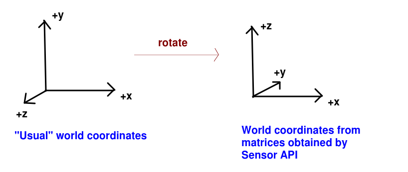

We have now covered almost everything necessary to build a location-based AR application on Android. There are just a small number of things necessary now to complete the picture.
Remember in the sensors topic we covered how to obtain the azimuth, pitch and roll of the device. We also covered how to obtain an orientation matrix representing the current device orientation. The good news is that this orientation matrix can (almost) be used as the view matrix in OpenGL, though note that you will probably need to remap the coordinate system to translate from portrait to landscape (again, see the sensors topic).
So how can this be implemented?
private var lastOrientMtx = FloatArray(16)
fun setOrientMtx(orientMtx: FloatArray) {
lastOrientMtx = orientMtx.clone()
}
onDrawFrame(), you need to set the view matrix to a clone of lastOrientMtx, and then translate it by the negative of the current camera position, as before:
// This should be placed where your current code to setup the view matrix is placed, in onDrawFrame()
viewMtx = lastOrientMtx.clone()
Matrix.translateM(
viewMtx, 0, -cameraPos.x, -cameraPos.y, -cameraPos.z
)
Latitude and longitude cannot be mapped directly to OpenGL coordinates, because latitude and longitude are designed for a spherical surface, such as the Earth, but OpenGL assumes that the units for the x, y and z directions are equal. So we need to convert latitude and longitude into coordinates expressed in a standard distance unit, such as metres. This involves performing a mathematical transformation known as a projection, in which the Earth (a sphere, more or less) is projected onto a flat surface. The projection being used is the Spherical Mercator projection, which works reasonably well for most places (the units do not exactly equal metres, but it's good enough for a typical AR application) However it is heavily distorted towards the poles and not recommended for far northern latitudes.
I have now added a library to do this conversion on the website, which you can download here. It contains these classes:
SphericalMercatorProjection - represents the projection being used. A projection allows you to convert between different coordinate systems. Here it can be used to convert between latitude/longitude and eastings/northings - see below.LonLat - a class representing a longitude and latitude, Has 'lon' and 'lat' attributes.EastNorth - a class representing a metre-based point, defined by eastings and northings. Eastings and northings are (approximately, not exactly, but good enough for our purposes here) metres east and north of a particular point, or world origin. Here, the world origin is Solent University. So if you convert the longitude and latitude of Solent into an EastNorth (easting and northing), it will give you zero for both the easting and northing. Points east of Solent have positive eastings and points north of Solent have positive northings. Has 'easting' and 'northing' attributes.
Algorithms - includes a method to calculate the distance between two latitude/longitude pairs.Main - contains some test code (currently commented out) showing you how you can use the SphericalMercatorProjection to project LonLat points into EastNorth, and unproject EastNorth points back into LonLat.You can just add these classes to your assignment project (feel free to put them in a separate package if you wish).
Note the relation between EastNorth and OpenGL x, y and z coordinates. Due to differences between the OpenGL matrix and the sensor matrix, the coordinate system as rotated as shown below:

So:
You can use the JSON parsing from last year, in MAD (see here). However note that the GeoJSON API returns an object so you will need to use obj() rather than array() to obtain it via Fuel e.g.
url = "https://example.com/geojson"
url.httpGet().responseJson { request, response, result ->
when(result) {
is Result.Success -> {
val geojsonRootObj = result.get().obj()
// Parse your JSON
}
is Result.Failure -> {
tv1.text = "ERROR ${result.error.message}"
}
}
}
You can use today to either catch up with last week, or ask questions about the assignment. However you might also want to try this exercise.
Try adding the Sensor API to your existing OpenGL application, and pass in the orientation matrix from the Sensor API to your Renderer. If you are on landscape you will need to remap the coordinate system.